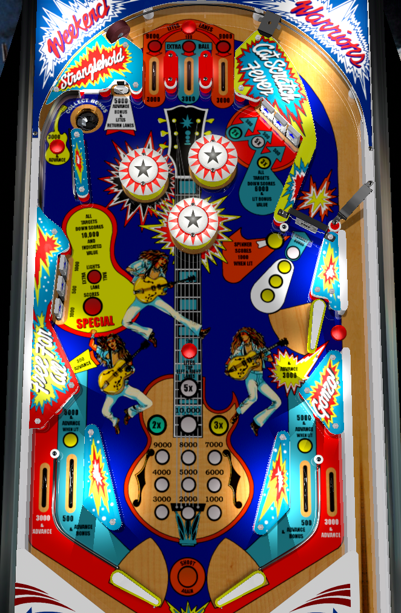

Nugent is a game about building and collecting bonus, at its core. Top priority is to collect bonus multipliers from the upper right drop targets, then build base bonus at the spinner or the secret plunger lane gate accessed by shooting underneath the raised upper right flipper. Once bonus is high, collect the full bonus including multiplier at the upper left saucer, which resets base bonus; wait until the base bonus is at least 10,000, though, because once you reach that level, the spinner is lit for 1,000 a spin for the rest of the ball.
Top lanes score 3,000 points.
The rollover buttons above the top lanes and in the center of the playfield score 100 points and light the left and right top lanes. Making either the left or right top lane when it is lit will unlight that lane and score 9,000 points instead of the usual 3,000.
The center top lane is lit for extra ball only after completing the left side drop targets twice in one ball.
These can be shot directly from the lower left flipper or the via the left orbit from the lower right flipper. Each target down scores 500 points. Any completion of the bank scores 6,000 points and resets the bank. The first three completions also increase the bonus multiplier to 2x, then 3x, then 5x.
Score 1,000 points in a 3-ball game, or 100 points in a 5-ball game.
The far upper left lane, which I call the left orbit, has a rollover button which scores 3,000 points and 3 bonus advances. A hard shot to this "orbit" lane will probably nudge the upper left standup target, which scores 5,000 points and a bonus advance as well as lighting both in lanes. In the same vicinity, but needing to be shot directly or landed in via pop bumper luck/nudging, is the collect bonus saucer. Collect bonus is always available and scores a full collect of the entire bonus including multiplier; after being collected, the base bonus is reset to 1,000 points, but earned multipliers stay intact.
The base value for the spinner is 100 points per spin. If the base bonus has been raised to at least 10,000 points at any time during the current turn, the spinner will be lit for 1,000 points per spin instead. In either case, every 4th spin registered by the spinner scores one bonus advance. This is the go-to shot as long as the bonus multiplier is maxed out, but base bonus is not.
The ball can pass under the upper right flipper when the right flipper is raised. This can happen as a direct shot or after a left slingshot bounce. The rollover button here scores 3,000 points and 3 bonus advances, and the ball falls back into the shooter lane for a replunge. This is a helpful shot to make, but risky enough to miss that the spinner is almost always a better choice for bonus build and getting back to the top of the table.
The center drop target scores 500 points. The other two score 1,000. Completing this bank once scores 10,000 points. Completing it a second time lights extra ball at the center top lane. Completing it a third time awards an instant special. Specials can be worth an extra ball, a free game, both of those, or 100,000 points. Game settings determine whether specials are limited to 1 per ball, meaning all completions starting with the 4th score just 10,000 points, or unlimited, meaning every completion of the left bank starting with the third scores a special.
The rubber wall just below the left drop targets scores 300 points and a bonus advance.
Nugent has a conventional in/out lane setup. Out lanes score 3,000 points and 3 bonus advances. In lanes score 500 points and 1 bonus advance when not lit. The upper left standup target will light both in lanes for 5,000 points and 3 bonus advances. Game settings determine whether the in lanes stay lit for the entire ball after the upper left standup target is hit once, or if both in lanes unlight once the increased value is collected one time.
There is a center peg between the flippers, but it tends not to be particularly helpful.
Bonus is advanced once by unlit in lanes, the upper left standup target, every 4th spin of the spinner, and the rubber wall below the left standup targets. Bonus is advanced 3 times by out lanes, lit in lanes, the left orbit rollover button, and the underneath-upper-flipper rollover button. Bonus multiplier is increased in the sequence 2x-3x-5x by the first, second, and third completions of the upper right drops. Max bonus is 5x 19,000 = 95,000 points. Advancing the base bonus to 10,000 points lights the right spinner for the rest of the ball. Bonus is collectible at the upper left saucer, which resets base bonus but not multiplier.
No features are carried over from ball to ball on Nugent. Bonus multiplier, all lit top lanes, left drop target progress, and base bonus are all reset for every player on every ball.
In competition/novelty play, specials score 100,000 points. Extra balls cannot be set to have a point value, and are either on or off. Specials can be limited to 1 per ball or open ended. In the case where specials are open ended and.or set to award an extra ball, there is a limit of one extra ball per ball in play.
In lanes can be set to be lit for the entire ball once the upper left standup target is hit. If they are, there is little reason not to shatz/alley pass the ball back and forth all day to build bonus. By default, in lanes will unlight themselves after the lit 5,000 points plus 3 bonus advance award is collected once.